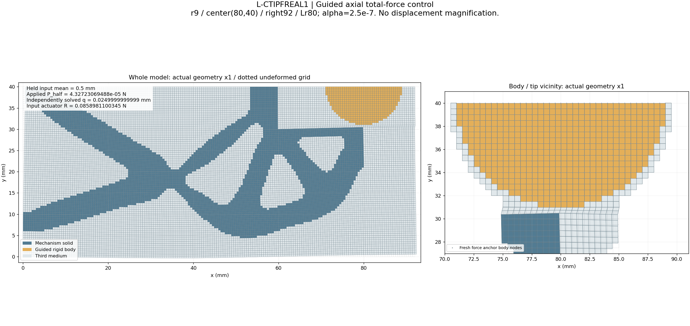
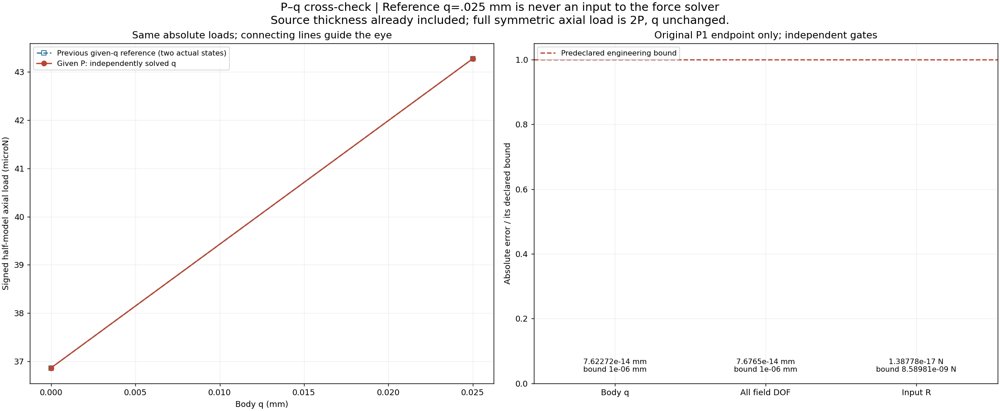
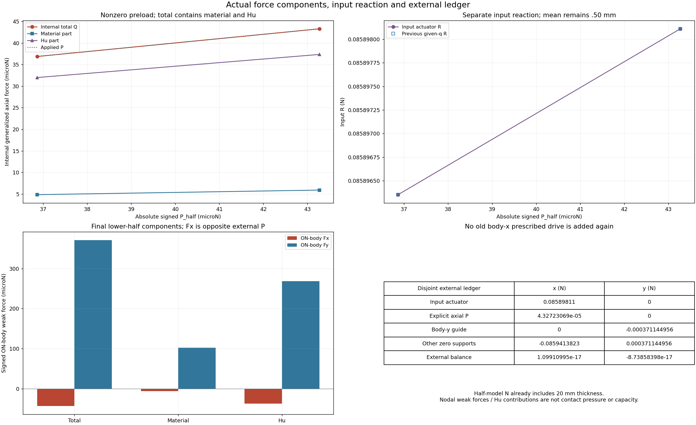
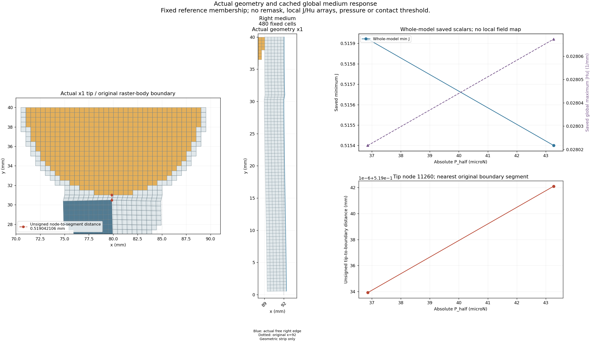
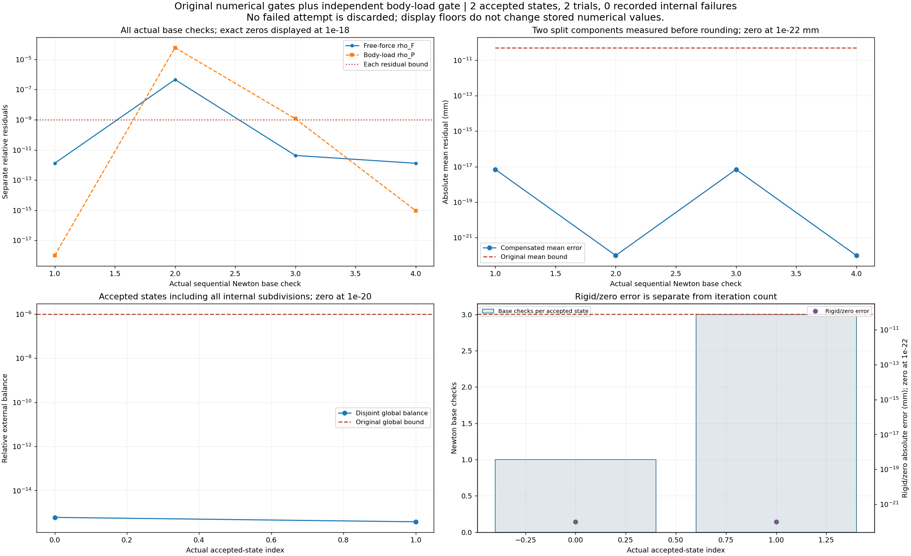
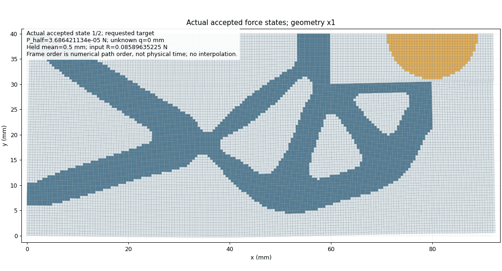

L-CTIPFREAL1 · 正式r9力控交叉
2026-10-23 · 已批准唯一执行 · PASS／窗口已关闭
正式r9：给定外载P，独立求工件位移q
机构mean=0.50 mm；α=2.5e−7／r9／(80,40)／right92／Lr80，14720单元／29970DOF。2个原请求均通过，无内部二分、无外部重试。57份生产源码保持。
| P_half / N | 求得q / mm | R_input / N |
|---|
| 3.686421133658022e−5 | 0 | 0.08589635225389337 |
| 4.3272306948756724e−5 | 0.024999999999923774 | 0.08589811003453524 |
P1对原规定q=.025：q差7.62e−14 mm，全DOF最大差7.68e−14 mm，R差1.39e−17 N，均过预定门。
P为已含t20的有符号半模型合外载，完整对称轴向外载2P，q不倍增。R是机构反力。Hu约占末态轴向总力86.29%，tip unsigned距离仍约.519 mm；本次是导向总弱力交叉，尚无纯接触承载／压力／释放／稳定性或新HP资格。
实际×1变形

机构mean保持0.50 mm，工件q由力控求解；全图密网格及小q可见性有限。
P–q及三项交叉误差

只给P，不输入参考q。参考点与新解重合，三项工程门预先冻结。
有符号力分量、输入R及外载账本

ON-body与P反号；total/material/Hu、机构R和导向／其他支撑分别显示。
尖端、右侧介质及全域响应

无符号tip到raster边界距离；right480原非工件格；J/Hu只是全域保存标量。
全部收敛及验收门

4个Newton base checks和2个trial；ρF、ρP、mean/global/rigid各保原门。
两帧实际接受态动画

每个实际态写一帧，无插值，无物理时间含义。帧数来自writer grab_frame记录；没有重开GIF解码查帧。五PNG的一次检查已通过，本页仅链接既存媒体，没有重绘。
记录与下一步
总outer398.682秒，四层SUP2正常退出／同实例清理通过，原窗口一次封存。0新HP／测试／生产修改，6F／4T均完成。下一步先准备mean1.06 mm高输入同定义两载荷交叉，保留其旧invalid_J／内部二分历史和近零J困难，不在已关闭窗口加算。
原QA · 原封存 · 成员SHA · 独立物理复核 · 历史卡 · 实际授权